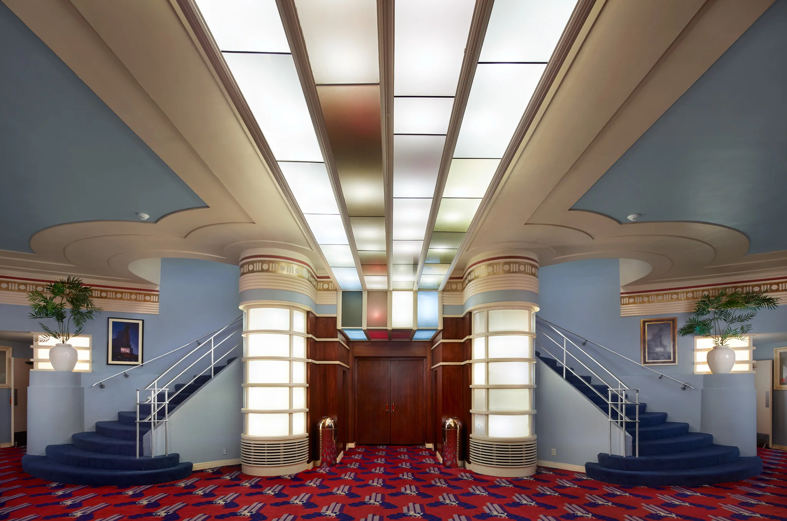
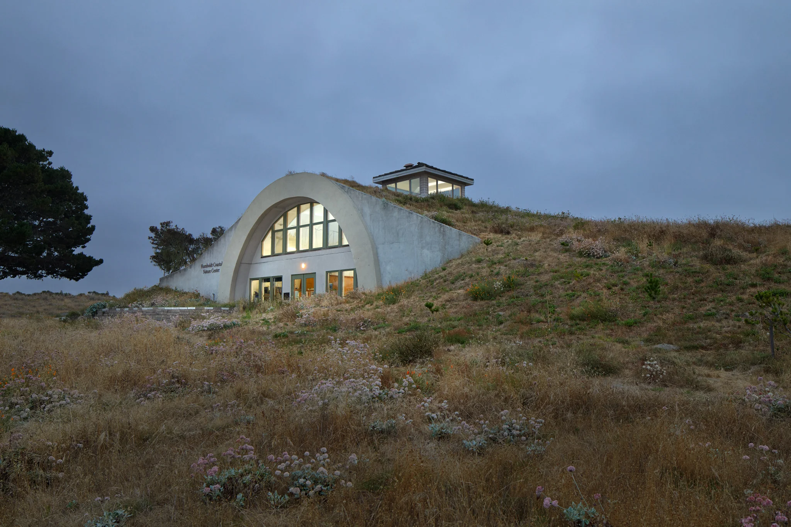
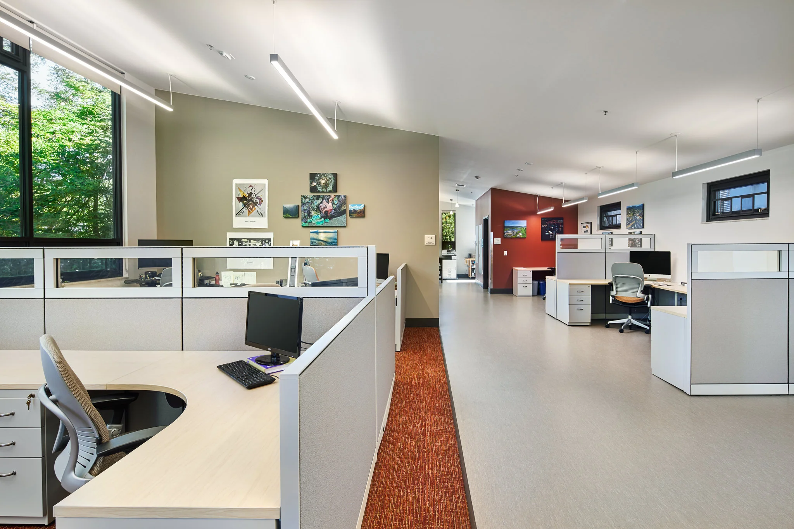
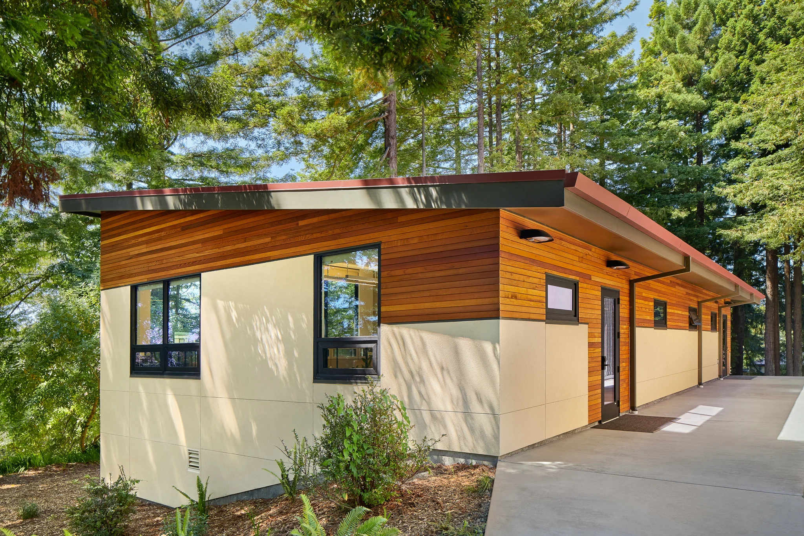

Goodbye 2018
2018 was a year filled with both hardship, hope, and personal growth as a photographer and as a person. I’ve entered into a career where others say the market is too saturated, where I don’t necessarily know what next month looks like, and one that would have me take risks I’m not always comfortable with. On the other side of things It’s provided me with more opportunities than I could have hoped for.
Starting in April of 2018 I took the business full time with the intention of building some experience before making a move to Portland after July. In addition to my marketing efforts in Humboldt County, I was able to take the first week off of each month to take networking trips to Portland to meet photographers in the industry and see how everything worked before I came up. I was able to speak with several photographers who gave me some of their time and understanding of the industry; Portland overall has been extremely generous and welcoming. I’ve been able to make more trips to visit family, and in general have a lot more freedom with my time. This wouldn’t have been possible without my Aunt and Uncle who allowed me to stay at their place for networking trips, and then for photo assisting work afterwards. Here’s a small sampling of some of the work I’ve completed this year.






If there are any photographers or self employed artists reading, I’d like to share what I’ve learned these past few months.
Networking is an artists greatest asset, and the immediate goal isn’t to drum up business; it’s to learn. Be genuine, be curious, make friends. The photography community can be really friendly, and in some places cutthroat, but if we don’t support each other we won’t survive. Other artists understand that, and clients understand that too. Work will come out of necessity, and if it doesn’t you have to find a way to make ends meet. It’s one of the risks you take to do something you love.
Don’t undervalue your work, but weigh the costs and benefits of your pricing structure. There are two general approaches to this. 1. Charge what the work is worth, and find clients who will pay. Some months will be hard, but you’ll have time to make portfolio work. Be careful with your savings. 2. Price yourself with the market and stay busy; then ramp up pricing later.
Plan for future goals by working towards them every day. Break up long term goals into bite size chunks that can be accomplished each day. Set aside time for research, marketing, education, networking etc., and don’t settle once you’ve gotten enough work. Keep pushing yourself to be better. If you can’t adapt to stay ahead, you won’t survive.
Ask for a no. Even if something seems farfetched, you should always try. Go for the big clients you could never imagine getting. Apply for jobs you want to do if you have some of the skill; resumes don’t need to be 100%. Ask to talk to people in your industry you look up to. Some of them won’t reply to an email. Others will set aside time to meet with you. The worst that can happen is a no. Best case scenario you get a job, make a friend, or build a connection. There’s nothing to lose.
Negotiate. if you’re asking for something that would normally be met with a “no”, address those reasons ahead of time, and find a way to incentivize a “yes”. People aren’t always going to help just because they’ve been asked. What’s in it for them?
Hustle. Marketing is a long term game, and you may not see the results of it for months or years. Be memorable, be unrelentingly professional, and always strive to make work you’re proud of.
Thanks to my new friends in Portland, and the ones in Humboldt who helped me get here; Happy New Year!